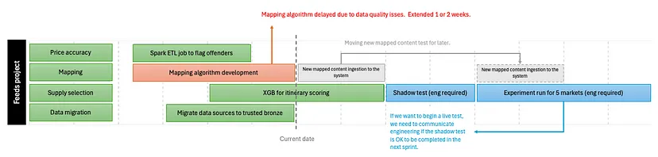

Try really hard not to send messages outside of work hours
Emphasize unplugging during vacations
Provide immediate feedback - positive and negative
Dedicate time to freeform exploration
Sometimes the rest of the business doesn’t know what to ask of your data org. That’s why you need to give your team time to explore.
Team members can come to new and exciting conclusions when they’re given time to explore the data for fun. They can apply their talents to looking for patterns that no one has requested, and have the space to uncover new discoveries. This freeform exploration can lead to game-changing innovations that no business stakeholder would have imagined were possible.
Helps keep your most valuable team members engaged and satisfied in their work.
When first starting, request documentation
Relevant server locations & descriptions
Locations of our documentation and dashboards
A list of tools/software that are available to be used
A list of relevant stakeholders/gatekeepers that I’d need to make contact with
Remote Teams
Video calls too easily become transactional and with little time for the chitchat that builds a proper human relationship. Without those deeper bonds, misunderstandings fester into serious relationship difficulties, and teams can get tangled in situations that would be effectively resolved if everyone were able to talk in person.
Some organizations may balk at the costs of travel and accommodation for a team assembly like this, but they should think of it as an investment in the team’s effectiveness. Neglecting these face-to-faces leads to teams getting stuck, heading off in the wrong direction, plagued with conflict, and people losing motivation. Compared to this, saving on airplanes and hotels is a false economy.
Frequency
Get together for a week every two or three months
After the team has become seasoned they may then decide to reduce the frequency, but I would worry if a team isn’t having at least two face-to-face meetings a year.
If a team is all in the same city, but using a remote-first style to reduce commuting, then they can organize shorter gatherings, and do them more frequently.
Schedule
Set a full day of work, focusing on those tasks that benefit from the low-latency communication that comes from being together. tasks that require lots of input from many people with rapid feedback
We should then include what feels like too much time for breaks, informal chatter, and opportunities to step outside the office.
Terms
Focus Time - uninterrupted time, usually refers to a period of time (e.g. 2 hrs) where people can work without any distractions
Report (aka Individual Contributor (IC))- People who report to the manager
Getting the Promotion
You don’t get a promotion and THEN start to perform at the next level; you perform at the next level IN ORDER TO get a promotion.
So when you notice a gap somewhere, even if it doesn’t necessarily fall into your current role description, don’t be afraid to bring it up to your manager and discuss whether you can/should take initiative to help plug the gap.
The best way to notice gaps is to be a good listener and constantly communicate with your partners & stakeholders about their teams’ work and pain points.
Mentor a peer
If you have new members joining the team, offer to be an onboarding buddy to guide them through their first few weeks.
brainstorm with team members when then need help
Step out of your immediate scope
Get involved in team-level activities
Help out with things such as sprint planning, quarterly planning, etc.
Allows you to gain knowledge about other team members’ work and other teams’ requests for your team
Gives you some exposure to the manager’s plan and vision for the team
Volunteering for culture initiatives is a great way to practice thinking about the team as a whole
Take on projects that help the whole team
product design doc for the data product
SLA agreement with partner teams (?)
Codify the best practices you use in your own work
Have open, timely feedback conversations with your manager
Ask for the leveling guide when you have the initial career development conversation with your manager.
And make sure you mention your aspiration to be a manager as soon as possible (don’t be shy) as well as your aspired timeline that you are working towards.
Ask your manager for candid feedback with regards to their assessment of your readiness to become a manager, and any gaps that they think you need to address.
In followup career development check-ins, ask your manager to provide feedback for you against the leveling guide.
Managerial Hats
People Manager - Learn what makes your direct reports (aka people that you manage) tick, identify their career aspirations, and point out opportunities for progress.
Resource Manager - Determine what resources are needed and acquire them. Mostly this means recruiting, hiring, and onboarding, but it also means advocating for money for training and team activities.
Project Manager - Collect and triage projects and project requirements, set timetables and schedules, assigned tasks, and have the final say about when work was “done”.
Communications Manager - Make sure the team’s work was being shared with the rest of the organization, and that everyone on the team knew what was going on outside.
Process Manager - Help design the team’s processes to make sure we could identify, allot, do, and communicate work across the team.
Technical Mentor and Coach - A technical expert who reviews code, answers technical questions, and gives work feedback to my team.
Preparation for a Managerial Role
Take notes on the time needed to do difficult tasks, easy quick-wins, common roadblocks, and their solutions.
This will help estimate deadlines for new projects
Practice verbal and written communication
Gather information on “big picture” strategy of your company and that applies to data projects
Take notes of every data team member’s strengths and weaknesses
Listen to your colleagues.
Complaints on a day-to-day basis.
Praise about the workplace in general.
Pay attention to pet projects of your teammates: these are the areas they actively pursue outside their usual work.
Goal: Have a 50:50 split between scheduled meetings vs open slots
Scheduled Meetings are time investments that you need to make to ensure that your teams are working smoothly and that project delivery is on track but should not take-up over 50% of your weekly agenda.
Adding flexibility to your schedule will allow you to allocate time to other areas such as:
Conducting interviews
Meetings to discuss urgent problems
Occasionally needing to extend team member 1–1s
Work Travel
Example: Leading 2 datascience teams which included overseeing 10 individual contributors and 5 projects
There are too many direct reports, too many projects, too many deep dives and too many squad ceremonies
See below for definitions of People, Process, and Projects
Solution:
Pressure senior leadership to get a new manager to lead one of the two teams and reallocate senior data scientists so that they could become accountable for some of these projects
You would continue to oversee 2 teams, but 1 team would have a dedicated lead. This means that the volume of 1–1s, ceremonies and project deep dives would be significantly smaller for them
1-1s (1 on 1), team-wide update, or decision-making meetings
Large (> 4 ppl) brainstorming meetings don’t work
Better to circulate a memo of come-up with options then debate those options during a meeting
Feel useless to attendees
Keep focus on the meetings agenda
Group meetings (manager’s agenda)
1-1s (1 on 1) (report’s agenda)
1:1s (AKA Direct Reports)
With ICs (usually 30 min)
Should focus mostly on the team member and not overly on their project
What did they do over the weekend?
Are they are feeling excited about the project?
Are they are worried with their relationship with stakeholders.
What could be the next thing for them.
Can I find funds for training?
Chat about their performance ratings and collect feedback for them.
Additional time can be scheduled for particular subjects such as:
Brainstorming an idea
Peer Review
Help putting together a presentation
Team member should come prepared and focused for this.
With other managers (usually an hour)
The person-focused things mentioned above but also on the status details of the team’s project such as:
Why are they deciding to focus on that feature for the next iteration?
How is that tied with the quarterly plan?
Has the team communicated the results more widely?
Is the team missing tooling?
Are the projects in PoC or MVP phase and when will they dedicate time to securing production systems?
With senior leadership
Try your best to get 30 mins every 2 weeks with those who call the shots as this can help unblock projects
Even if they are a few levels above you, if you add value to their area of influence, they will typically make time to chat with you.
Should be direct and to the point, and come prepared
Examples:
“Project needed engineering support to build an API, but we didn’t have a relationship with the engineering leads from a new team. The director of the hotels space managed to wipe out 1 engineers agenda for 1 month, and we collaborated to get this live. Result? What would have taken 6 months on our own (ask for help in Q1 and wait for the item to be prioritised for Q2), took only 1 month.”
“Marketing lead came to us with a set of projects she needed help with, but we only had 3 data scientists, and couldn’t cover all of them. Prioritization was becoming an issue. The senior director of marketing organized an onsite for the leads to get together with the goal of leaving the room with a prioritization for the next 3 months whilst he would put pressure upwards for more data science resources.”
(Optional) With IC(s) from other teams
If you oversee another team besides your own, it can be useful to also have 1:1s with them.
Informative to gauge team dynamics (how things are done over there vs here)
Includes IC(s) who are working on a project and yourself,
Get together for 1 hour and cover the current delivery against plan, discuss new ideas, have brainstorms and run peer reviews.
Start of with a quick view of how are we doing against our “waterfall” planned delivery timeline 
Shows mini-milestones for a project. These are fluid: we can move them around, extend the delivery time or cancel them.
Important: Devote 5 minutes to looking ahead of time and figuring out what needs to happen TODAY in order to enable work planned for 2 or 3 sprints ahead.
Peer Review (Geek Stuff): Talk about the XGB being developed, suggest metrics to better communicate the data quality we are facing or look at execution times and orchestration of our ETL Spark job
Performance Meetings with Stakeholders
Stakeholders tend to be a mix of product managers, marketeers and engineers
Put all of the ICs and leads from different teams and disciplines together for 1 hour
If IC feels comfortable and has enough context, senior managers can skip many of these.
Start with a 5 to 10 minute progress report
Continue with technical discussions.
For example, we present some analysis from our bidding algorithm and our marketing colleagues ask questions about possible scenarios or situations. These enquiries help us shape future work, build tracking metrics or consolidate the trust that other teams have in our work.
Spend around 10 minutes dedicated to accountability.
Who is going to do what and in what timeframe?
Are we all aligned that the next 2 items to focus on are X and Y?
Who do we need help from to unblock this work stream?
Tools for Servant Leadership
Teaching - As a leader you often have more context and more experience than your team members.
Teach the team which situations different models work in, how those models are perceived in your organization and the red-flags to watch out for during development.
Reflecting - Make time to think back to events within your team.
What caused success? What led to failure? Are we setting expectations appropriately for our models and analyses?
Debate - Encourage debate.
The team is trying to use data to understand the world, and as in any form of science, there will be competing hypotheses
Take advantage of the diversity (all forms) within our teams to minimize the impact of those personal biases
Process - Leaders will have to deal with ambiguity, but for the wider team we need to ensure there are steps to follow that support consistency across the team and alignment on the team’s over-arching goals.
Feedback - To maintain team members’ morale, the balance between negative and positive feedback has to tilt heavily towards the positive
If you can’t find that balance, then you need to consider whether the team member should continue on your team. If you want them to remain, then you must figure out how to articulate their positives back to them, otherwise you can expect them to leave.
“If I am criticizing to help, I am doing it right; if I am doing it to harm, I am doing it wrong.”
To help, it should contain five elements: the care of the recipient in mind; respectful delivery; good intentions; a pathway to improvement; and appropriate targeting of the recipient’s needs.
“Just so we know we’re on the same page, could you play back what I’m asking of you?”
40-word rule
During difficult conversations, it’s important to be extremely concise. Aim to describe your observations, feelings, needs, and requests in fewer than 40 words. Using more words suggests you’re justifying your needs, and that decreases their power.
Face-to-Face is better
NVC loses some of its power when it’s in an email.
Consequences should be protective, not punitive
As a manager, you are responsible for the effectiveness of your team — and every team needs effectiveness. If deadlines continue to be missed (the boundary), you might have to switch their responsibilities or move them on (the consequence). It’s not personal, it’s just what you’ll do to protect your need for effectiveness.
Other methods
SBI (Situation-Behavior-Impact) Useful for giving better feedback by removing emotions from it and making it clear and concise
Steps
Situation - Start the feedback with a specific situation that occurred which serves as a common reference point and is specific.
Behavior - Refer to a specific behavior that you observed and want to talk about. Make sure to not give any judgments and leave the interpretation out of it.
Impact - Talk about the impact that behavior had and what you think and feel about it. Feel free to address what other people think and how it impacted things.
Intent - Ask about the person’s intention and try to uncover if the person is aware of what he did and why he did it. Then, work together with the person to see how things can be made better and how to overcome issues.
NVC Pattern
“When ____[observation], I feel ____[emotion] because I’m needing some ____[universal needs]. Would you be able to ____[request]?”
Examples
To a co-founder: “When you said, ‘I’m not happy with your work,’ to me in front of the team, I felt embarrassed because it didn’t meet my need for trust and recognition. Please, could we set up a weekly one-on-one session to share feedback in private?”
To an investor: “I haven’t received any responses from the last three monthly updates. I’m feeling concerned because I need input. Please, would you mind getting back to me with responses to my questions in the last update?”
To a teammate: “You arrived 10 minutes late to the last three team meetings. I am frustrated because, as a team, we have a need for efficiency. Please, could you help me understand what’s happening?”
Observations (vs evaluations)
Examples
Evaluation: “You are lazy” (which is a character attack). Observation: “You said that you’d send the document last week, and I haven’t received it.”
Evaluation: “Your work is sloppy” (which is a criticism). Observation: “Three of the numbers in the report were inaccurate.”
Evaluation: “You’re always late,” (which is a generalization). Observation: “You arrived 10 minutes late to the meeting this morning.”
Evaluation: “You ignored me.” (which implies intent). Observation: “I sent you two emails, and I haven’t received a response.”
Check
ask yourself, “What did I actually see or hear?”
Emotions (vs thoughts, vs evaluations)
Using an evaluation or thought instead of an emotion, can result in a defensive reply
Examples
Emotion: “I feel frustrated.” Thought: “I feel that you aren’t taking this seriously.”
For thoughs, if you can substitute “I feel” with “I think” and the phrase still works — because it’s a thought, not an emotion.
Universal Need (vs strategy for obtaining a need)
Examples
Strategy: “I need you to copy me into every email.” Universal Need: “I need some transparency.”
Universal: ““I need support.” NOT Universal: “I need support from you.”
NOT Universal is more easily interpreted as a veiled accusation and implication that “You aren’t supporting me.”
Requests (vs demands)
requests are invitations for another person to meet our needs — but only if it doesn’t conflict with one of their needs.
Characteristics of a good request
Make them specific
“I request that you arrive to meetings on time.” instead of “I request that you be more respectful of everyone’s time.”
Say what you want, not what you don’t want
Don’t want: “I request that you don’t dismiss other people’s ideas straightaway”
Want: “I request that when a team member shares an idea, you ask two or three probing questions before sharing your conclusion.”
Stay curious
Be optimistic that everyone’s needs can be met.
Treat “no” to a request or a defensive reply as an invitation to explore the needs stopping someone from saying “yes.”
Think about how the other person is feeling and consider what unmet needs may be stopping them from saying “yes.”
Are you feeling hurt because you need some understanding?
Are you feeling angry because you need your hard work to be recognized?
Is there more you’d like to say?
Similarly, if you’re on the receiving end of a request and have to say “no,” state the underlying need that stops you from saying “yes.”
Promoting Your Team’s Projects
Announcement Emails
Unlike “sharing” emails (brief description, link), announcement emails have more pomp associated with them
Characteristics
Use catchy subject lines — e.g. ‘Retention Dashboard is here!’ or ‘Introducing Retention Dashboard’
In addition to stating what the dashboard contains, tie it to key insights, recommendations and next steps
Use icons & visuals — Adding relevant icons and visuals makes the email easier to consume and provides a nice break from all the heavy text. Caution: Do not overuse!
{kind=link}
{kind=link}
{kind=link}
{kind=link}
{kind=link}